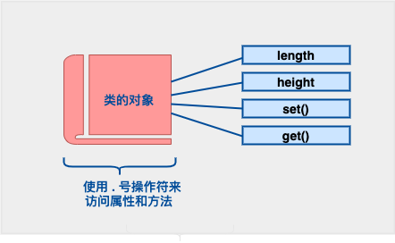

C++ 类 & 对象
C++ は C 言語の基礎の上にオブジェクト指向プログラミングを追加しました。C++ はオブジェクト指向プログラミングをサポートします。クラスは C++ の核心的な特性であり、通常はユーザー定義型と呼ばれます。
クラスはオブジェクトの形式を指定するために使用され、ユーザー定義のデータ型であり、データと関数をカプセル化した組み合わせです。クラス内のデータはメンバ変数と呼ばれ、関数はメンバ関数と呼ばれます。クラスはテンプレートとみなすことができ、同じ属性と動作を持つ複数のオブジェクトを作成するために使用できます。
C++ クラス定義
クラスを定義するにはキーワードが必要ですclassそしてクラスの名前を指定し、クラスの本体は一対の波括弧で囲まれ、その本体にはクラスのメンバ変数とメンバ関数が含まれます。
クラスを定義することは、本質的にデータ型の青写真（ブループリント）を定義することであり、クラスのオブジェクトが何を含み、そのオブジェクトに対してどのような操作を実行できるかを定義します。

以下の例ではキーワードを使用しますclassBoxデータ型を定義し、length、breadth、heightの3つのメンバー変数を含みます：
关键字publicクラスメンバーのアクセス属性を決定します。クラスオブジェクトのスコープ内では、パブリックメンバーはクラスの外部からアクセス可能です。クラスのメンバーを次のように指定することもできます。private 或 protected、これについては後で説明します。
C++ オブジェクトを定義する
クラスはオブジェクトの青写真を提供するため、基本的にオブジェクトはクラスに基づいて作成されます。クラスのオブジェクトの宣言は、基本型の変数を宣言するのと同じです。次の文は、クラス Box の2つのオブジェクトを宣言しています。
オブジェクト Box1 と Box2 は、それぞれ独自のデータメンバーを持っています。
データメンバーにアクセスする
クラスのオブジェクトのパブリックデータメンバーは、直接メンバーアクセス演算子を使用してアクセスできます。.来访问。

これらの概念をよりよく理解するために、次の例を試してみましょう。
实例
上記のコードがコンパイルおよび実行されると、次の結果が生成されます。
Box1 的体积：210 Box2 的体积：1560 Box3 的体积：1536
プライベートメンバーとプロテクトメンバーは、直接メンバーアクセス演算子 (.) を使用して直接アクセスできないことに注意してください。プライベートメンバーとプロテクトメンバーへのアクセス方法については、後のチュートリアルで学習します。
クラス & オブジェクトの詳細
これまでに、C++ のクラスとオブジェクトについて基本的な理解ができました。次のリストには、C++ のクラスとオブジェクトに関連するその他の概念もいくつか記載されていますので、対応するリンクをクリックして学習できます。
| 概念 | 描述 |
|---|---|
| 类成员函数 | クラスのメンバ関数とは、定義とプロトタイプをクラス定義の内部に記述する関数のことです。クラス定義内の他の変数と同じです。 |
| 类访问修饰符 | クラスメンバーは public、private、protected として定義できます。デフォルトでは private として定義されます。 |
| 构造函数 & 析构函数 | クラスのコンストラクタは特別な関数であり、新しいオブジェクトを作成するときに呼び出されます。クラスのデストラクタも特別な関数であり、作成したオブジェクトを削除するときに呼び出されます。 |
| C++ 拷贝构造函数 | コピーコンストラクタは特別なコンストラクタであり、オブジェクトを作成するときに、同じクラスの以前に作成されたオブジェクトを使用して、新しく作成されたオブジェクトを初期化します。 |
| C++ 友元函数 | 友元函数クラスの private および protected メンバーにアクセスできます。 |
| C++ 内联函数 | インライン関数を使用すると、コンパイラは関数を呼び出した場所で関数本体のコードを展開しようとします。 |
| C++ 中的 this 指针 | すべてのオブジェクトには特別なポインタがありますthis、それはオブジェクト自体を指します。 |
| C++ 中指向类的指针 | クラスを指すポインタの方法は、構造体を指すポインタと同じです。実際には、クラスは関数を備えた構造体とみなすことができます。 |
| C++ 类的静态成员 | クラスのデータメンバーと関数メンバーはどちらも static として宣言できます。 |
董老爷
zeh***dong@163.com
C++におけるthisポインタの理解について：家に入ると、家の中のテーブル、椅子、床などを見ることができますが、家の全貌は見えません。クラスについても、メンバー関数やメンバー変数は見えますが、インスタンス自体は見えません。しかし、thisを使うことでこのインスタンス自体を見ることができます。
私の理解では、class クラスはこの家のようなもので、this は鍵のようなものです。鍵を使ってこの家のドアを開ければ、中のものは自由に使えます。
thisのスコープはクラスの内部にあるため、自分でクラスを宣言するときはインスタンス化されたオブジェクトの名前がまだわからないので、thisを使用してオブジェクト変数自身にアクセスします。非静的メンバー関数では、コンパイラはコンパイル時にthisを暗黙の仮引数として追加し、thisを介して各メンバーにアクセスします（thisポインタを書かなくても）。
代码实例：
class Point { int x, y; public: Point(int a, int b) { x=a; y=b;} void MovePoint( int a, int b){ x+=a; y+=b;} void print(){ cout<<"x="< } void main( ) { Point point1( 10,10); point1.MovePoint(2,2); point1.print( ); } }董老爷
zeh***dong@163.com
helloworld
229***137@qq.com
C++ の struct は C の struct を拡張したもので、もはや異なるデータ型を含むデータ構造だけではなく、多くの機能を獲得しています。
struct はメンバ関数を含めることができますか？ できます！
structは継承できますか？ できます！！
structはポリモーフィズムを実現できますか？ できます！！！
それがこれらすべてを実現できるなら、struct と class にまだどんな違いがあるのでしょうか？
最も本質的な違いの一つは、デフォルトのアクセス制御です。それは2つの側面に現れています。
1）デフォルトの継承アクセス権限。structはpublicで、classはprivateです。
次のようなコードを書くことができます。
struct A { char a; }; struct B : A { char b; };この場合、B は A を public 継承しています。
もし上記の struct をすべて class に変更した場合、B は A を private 継承します。これがデフォルトの継承アクセス権限です。
そのため、普段クラスの継承を書くときは、通常このように書きます：
これは、デフォルトの private 継承ではなく、public 継承であることを明示するためです。
もちろん、デフォルトが public 継承か private 継承かは、基底クラスではなく派生クラスに依存します。
私が言いたいのは、struct は class を継承でき、同様に class も struct を継承できます。その場合、デフォルトの継承アクセス権限は、派生クラスが struct を使うか class を使うかによって決まります。次のようになります：
struct A{}; class B : A{}; //private继承 struct C : B{}; //public继承2）struct はデータ構造の実装体として、デフォルトのデータアクセス制御は public です。一方、class はオブジェクトの実装体として、デフォルトのメンバ変数アクセス制御は private です。
上記の私の言葉遣いに注意してください。struct は class のように使うことができますが、それでも struct はデータ構造の実装体であると強調します。私は依然として struct 内の変数を「データ」と呼び、class 内の変数を「メンバ」と呼びますが、それらに違いはありません。
実際に、structを使うかclassを使うかは完全に個人の好みです。プログラム内のすべてのclassをstructに置き換えても、正常に動作します。しかし、私が与える最良のアドバイスは、やはり次の通りです。作りたいものがデータ構造により近いと思うならstructを使い、オブジェクトにより近いと思うならclassを使いましょう。
もちろん、ここでもう一点強調したいのは、アクセス制御についてはデフォルトに頼るのではなく、プログラム内で明示的に示すべきであるということです。これは良い習慣であり、コードの可読性も高めます。
ここまで話すと、多くの知識のある人はこの話題は終わったと思うかもしれません。なぜなら、struct と class の「唯一の」違いはアクセス制御だと知っているからです。多くの文献でも確かにこの1つの違いしか述べられていません。
しかし、私は上記で「唯一」とは言わず、「最も本質的」と言いました。それは、確かにもう一つの違いがあるからです。その違いは普段ほとんど触れることはないかもしれませんが。「class」というキーワードは「typename」と同様にテンプレートパラメータを定義するためにも使用されます。しかし、キーワード「struct」はテンプレートパラメータの定義には使用されません。この点は Stanley B.Lippman 著の Inside the C++ Object Model で説明されています。
問題の議論はここまでで、基本的に終わってもよいはずです。しかし、かつて誰かが他にも「違い」を発見したと言ったことがあります。では、それが本当にまた別の違いなのか見てみましょう。前述のとおり、C++ の struct は C の struct を拡張したものです。拡張である以上、過去の C の struct が持つべきすべての特性を互換性として保持する必要があります。例えば、次のように書くことができます：
struct A //定义一个struct { char c1; int n2; double db3; }; A a={'p',7,3.1415926}; //定义时直接赋值つまり、struct は定義時に {} を使って初期値を代入できます。では問題です。class ではできるのでしょうか？ 上記の struct を class に変更して試してみてください。エラーになります！ ああ、そこでその人はまた違いを見つけたと言い出しました。よく見てみると、これは本当に別の違いなのでしょうか？
上記の struct にコンストラクタ（または仮想関数）を追加してみてください。何がわかりますか？
そうです、struct でも {} を使って初期値を代入できなくなります。
確かに、{} による初期値の代入は、初期化リストを使ってデータを順番に初期化しているだけです。例えば、上記で A a={'p',7}; と書いた場合、c1, n2 は初期化されますが、db3 は初期化されません。このような単純な copy 操作は、単純なデータ構造に対してのみ行えるものであり、オブジェクトに対して行うべきではありません。コンストラクタや仮想関数を追加すると、struct はよりオブジェクトの特性を示すようになり、この {} 操作は無効になります。
実際には、そのような関数を追加することで、クラスの内部構造が変化するためです。では、普通のメンバ関数を追加した場合はどうでしょうか？ {} が依然として使用可能であることに気づくでしょう。実は、普通の関数はデータ構造に対する一種のアルゴリズムと理解できます。これはデータ構造としての特性を壊すものではありません。
ここまで見てくると、struct が {} で初期値を代入しようとする場合でも、多くの制約条件を満たさなければならないことがわかります。これらの条件は、実際には struct をクラスというよりもデータ構造としての特性をより強く持たせるためのものです。
では、なぜ上記で struct を class に変更しただけで、{} が使えなくなったのでしょうか？
実は、問題はまさに先ほど説明したアクセス制御です！ 見てください、何を忘れていましたか？ そう、struct を class に変更すると、アクセス制御が public から private に変わります。それなら当然 {} で初期値を代入できなくなります。public を追加すると、class でも {} が使えるようになり、struct とまったく違いがないことがわかるでしょう！！！
まとめると、上記の違いから、struct はデータ構造の実装体と見なすのが適しており、class はオブジェクトの実装体と見なすのが適していることがわかります。
helloworld
229***137@qq.com
张家子谦
492***694@qq.com
クラスの外部でも、実はポインタを使ってクラス内部のプライベートメンバーにアクセスできます。例えば：
#include <iostream> using namespace std; class a // 定义了类a { long a0; // 定义私有成员 a0 public: a(long b) { a0=b; } void geta() { cout<<a0<<endl; } }; int main() { a b(5); // 定义对象b，并给 b 中的 a0 赋初值 long *p; p=(long*)&b; // 令指针 p 指向 b 中前 4 个字节，在这里相当于指向 a0 b.geta(); // 用内部函数访问 a0 cout<<*p<<endl; // 在外部直接访问 a0 *p=8; // 在外部改变 a0 的值 b.geta(); // 输出改变后的结果 cout<<*p<<endl; return 0; }注意すべき点は、この方法はクラスベースのポリモーフィズムの原則に基づく一部のプログラム開発に使用できるものの、クラスのカプセル化の原則に違反し、ポインタを使用するクラスにおいても非常に安全ではないため、使用は推奨されません。
张家子谦
492***694@qq.com
FS
429***f0967@qq.com
FS
429***f0967@qq.com
csjpli
ljp***@163.com
クラスオブジェクトを初期化するとき、括弧を付ける場合と付けない場合の違いは何ですか？
#include<iostream> using namespace std; class A { public: A() { cout << "A()" << endl; } A(int a) { cout << "A(int a)" << endl; } }; int main() { //栈上 //warning C4930 : “A a(void)” : 未调用原型函数(是否是有意用变量定义的 ? ) A a();//这里声明了一个函数，没有传入的参数，返回值为类类型 cout << "~~~~~~~~~~~" << endl; A b;//默认调用“对象名()”这个构造函数构造对象 cout << "~~~~~~~~~~~" << endl; A c(1);//默认调用相应的构造函数构造对象 //堆上,加括号不加括号无差别，都调用默认的构造函数 A *d = new A(); A *e = new A; //对于内置类型而言,加括号是进行了初始化，不加是未进行初始化 int *f = new int(); int *g = new int; cout << *f << endl; cout << *g << endl; system("pause"); return 0; }csjpli
ljp***@163.com
修罗逮C
dua***s@126.com
あるオブジェクトを別のオブジェクトに代入したとき、何が起こるのでしょうか？
其中Box &Box3 = Box1、Java と同様にBox3 = Box1。
Java との違い：C++ の参照は作成時に初期化する必要があり、作成後は別のオブジェクトを指すことはできません。一方、Java ではオブジェクト名はいつでも同じ型の別のオブジェクトを指すことができます。
上記の結論は、次の例を使用して導き出されました。
#include <iostream> using namespace std; class Box { public: double length; // 长度 double breadth; // 宽度 double height; // 高度 // 成员函数声明 double get(void); void set( double len, double bre, double hei ); }; // 成员函数定义 double Box::get(void) { return length * breadth * height; } void Box::set( double len, double bre, double hei) { length = len; breadth = bre; height = hei; } int main( ) { Box Box1; // 声明 Box1，类型为 Box Box Box2; // 声明 Box2，类型为 Box double volume = 0.0; // 用于存储体积 // box 1 详述 Box1.height = 5.0; Box1.length = 6.0; Box1.breadth = 7.0; // box 1 的体积 volume = Box1.height * Box1.length * Box1.breadth; cout << "Box1 的地址：" << &Box1 <<endl; cout << "Box1 的体积：" << volume <<endl; // box 2 详述 volume = Box2.get(); cout << "Box2 的地址：" << &Box2 <<endl; cout << "Box2 的体积：" << volume <<endl; Box2 = Box1; volume = Box2.get(); cout << "Box2 的地址：" << &Box2 <<endl; cout << "Box2 的体积：" << volume <<endl; return 0; }运行结果：
この点を深く理解するには、コピーコンストラクタとオブジェクトの参照を合わせて対比して理解してください。
修罗逮C
dua***s@126.com
侠客不留名
405***099@qq.com
このように理解するのが直感的です。そうでなければ、初心者にはまったく理解できません。
// 1. 基础准备 #include <iostream> // 引入输入输出库 using namespace std; // 使用标准命名空间（简化代码书写） // 2. 盒子类的声明 class Box { public: // 公有访问权限（初学者先记住这是必要结构） // 成员变量（物体的三维属性） double length; // 长 double breadth; // 宽 double height; // 高 // 成员函数声明（能力说明） double get(); // 获取体积 void set(double l, double b, double h); // 设置尺寸 }; // 3. 成员函数具体实现 double Box::get() { // 双冒号表示属于Box类的函数 return length * breadth * height; // 体积计算公式 } void Box::set(double l, double b, double h) { length = l; // 将参数值赋给成员变量 breadth = b; height = h; } // 4. 主程序（使用案例） int main() { // 创建三个不同的盒子对象 Box Box1, Box2, Box3; double volume = 0; // 临时存储计算结果 /* 操作方式对比 */ // 方式一：直接操作成员变量（公开访问） Box1.height = 5; // ▢ 直接设置高度 Box1.length = 6; // ▢ 直接设置长度 Box1.breadth = 7; // ▢ 直接设置宽度 volume = Box1.height * Box1.length * Box1.breadth; cout << "Box1体积：" << volume << endl; // 输出结果 // 方式二：通过方法操作（推荐方式） Box3.set(16, 8, 12); // 一键设置所有尺寸 volume = Box3.get(); // 自动计算体积 cout << "Box3体积：" << volume << endl; return 0; }侠客不留名
405***099@qq.com